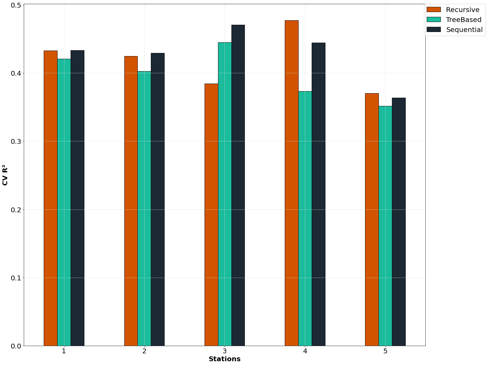
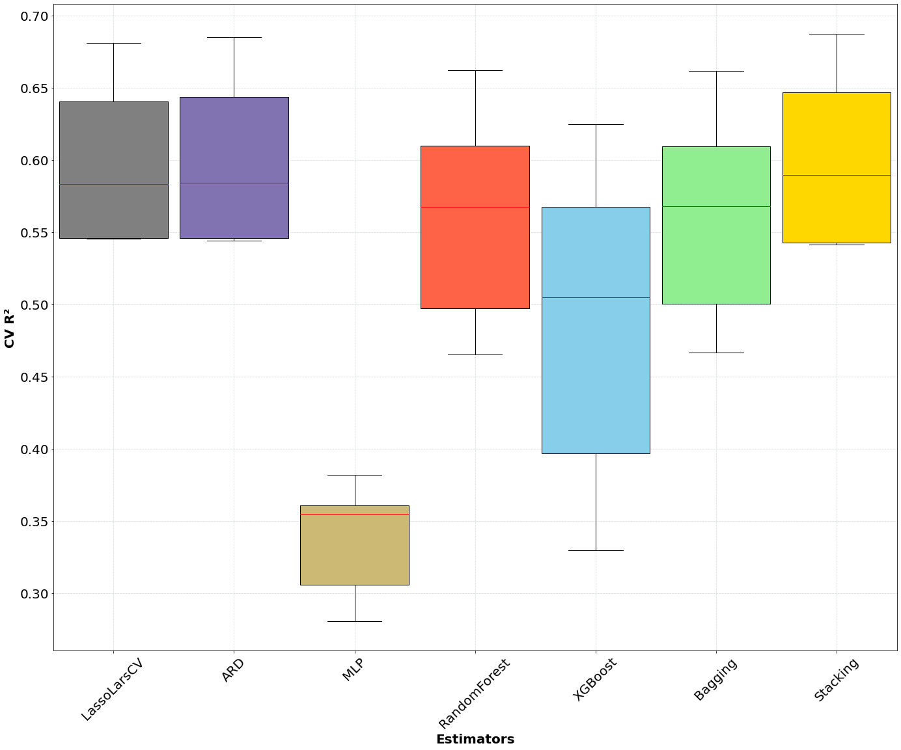
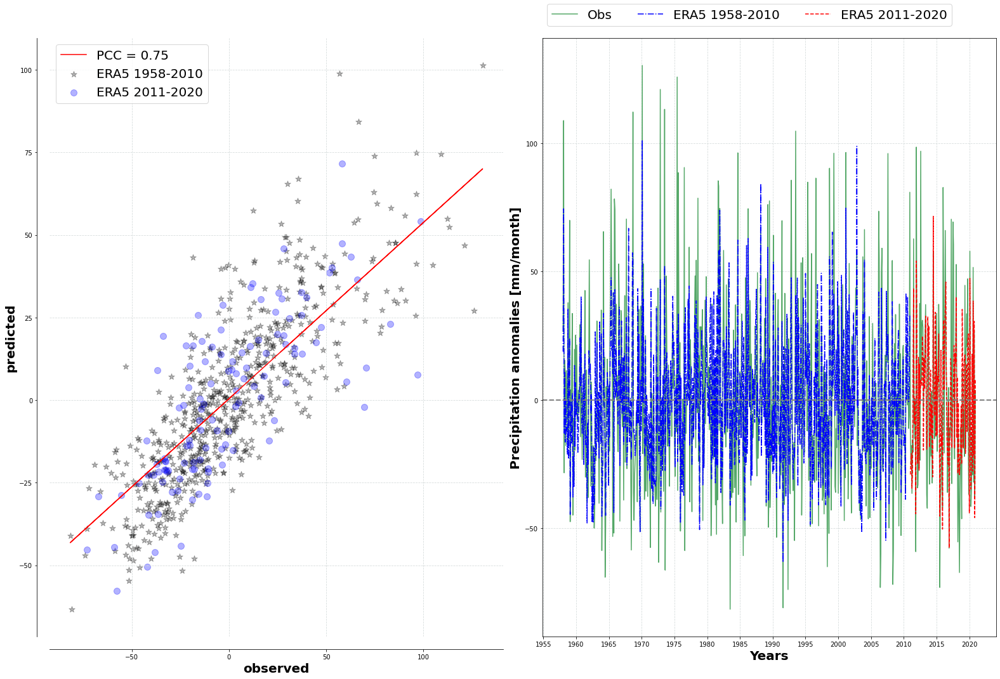

tutorials
Using pyESD for Downscaling Climate Information 🥗
In this section, we provide comprehensive examples of utilizing the pyESD package for downscaling climate information. We focus on analyzing precipitation records over southern Germany by utilizing data from 5 stations, randomly selected from a pool of over 1500 stations available at the DWD Climate Data Center. We offer both the post-processed data for these stations and the corresponding scripts required to achieve the results showcased here. These examples are designed in the form of Jupyter Notebooks, complete with step-by-step instructions and explanations to assist users in adapting to pyESD’s modeling routines.
Preprocessing Data for pyESD 🍨
To preprocess the data downloaded from the DWD CDC for use with pyESD, we use the following code:
import sys
import os
from pyESD.data_preprocess_utils import extract_DWDdata_with_more_yrs, add_info_to_data
# Set the paths to the raw datasets
main_path = "C:/Users/dboateng/Desktop/Datasets/Station/southern_germany"
data_files_path = os.path.join(main_path, "data")
path_data_considered = os.path.join(main_path, "considered")
path_data_processed = os.path.join(main_path, "processed")
path_data_info = "C:/Users/dboateng/Desktop/Datasets/Station/southern_germany/data/sdo_OBS_DEU_P1M_RR.csv"
if not os.path.exists(path_data_considered):
os.makedirs(path_data_considered)
if not os.path.exists(path_data_processed):
os.makedirs(path_data_processed)
# Extract datasets meeting the 60-year requirement
extract_DWDdata_with_more_yrs(path_to_data=data_files_path, path_to_store=path_data_considered,
min_yrs=60, glob_name="data*.csv", varname="Precipitation",
start_date="1958-01-01", end_date="2022-12-01", data_freq="MS")
# Format processed data
add_info_to_data(path_to_info=path_data_info, path_to_data=path_data_considered,
What Do the Datasets Look Like 📷?
Let’s take a closer look at the simple data structure that pyESD loads as a station object. For the station datasets, the initial rows contain station attributes such as longitude, latitude, station name, and elevation. Starting from the sixth row onwards, you’ll find the date and the corresponding predictand value. This means that datasets from sources outside the DWD climate data center can be easily formatted into this structured format, making them compatible with pyESD.
Regarding predictors, any reanalysis dataset that covers the weather station and the defined domain, typically within a 200km radius, can be used. In our example, we utilized the locally available ERA5 datasets, which can be conveniently downloaded from the Copernicus data center. We opted for the global datasets, although it’s not mandatory. To load these datasets, you only need to provide the paths to the datasets from the pyESD.utils module (refer to read_data.py). Importing predictions is as simple as specifying the variable name defined in the datasets, as illustrated in the example for total precipitation (tp).
Jupyter Notebook: predictand and predictors data structure
Throughout this tutorials, we use one script to read all the required datasets and import it in all the various examples demonstrated.
import sys
import os
import socket
import pandas as pd
import numpy as np
from pyESD.ESD_utils import Dataset
from pyESD.Weatherstation import read_weatherstationnames
radius = 200 # km for predictor contruction
# DEFINING PATHS TO DATA
# ======================
era5_datadir = "C:/Users/dboateng/Desktop/Datasets/ERA5/monthly_1950_2021/"
cmip5_26_datadir = "D:/Datasets/CMIP5/Monthly/MIPESM/RCP26"
cmip5_45_datadir = "D:/Datasets/CMIP5/Monthly/MIPESM/RCP45"
cmip5_85_datadir = "D:/Datasets/CMIP5/Monthly/MIPESM/RCP85"
station_prec_datadir = "C:/Users/dboateng/Desktop/Python_scripts/ESD_Package/examples/tutorials/data"
predictordir = os.path.join(os.path.dirname(__file__), '.predictors_' + str(int(radius)))
cachedir_prec = os.path.abspath(os.path.join(__file__, os.pardir, 'final_cache_Precipitation'))
if not os.path.exists(cachedir_prec):
os.makedirs(cachedir_prec)
# LOADING PREDICTORS (ERA5)
# ===========================
ERA5Data = Dataset('ERA5', {
't2m': os.path.join(era5_datadir, 't2m_monthly.nc'),
'msl': os.path.join(era5_datadir, 'msl_monthly.nc'),
'u10': os.path.join(era5_datadir, 'u10_monthly.nc'),
'v10': os.path.join(era5_datadir, 'v10_monthly.nc'),
'z250': os.path.join(era5_datadir, 'z250_monthly.nc'),
'z500': os.path.join(era5_datadir, 'z500_monthly.nc'),
'z700': os.path.join(era5_datadir, 'z700_monthly.nc'),
'z850': os.path.join(era5_datadir, 'z850_monthly.nc'),
'z1000': os.path.join(era5_datadir, 'z1000_monthly.nc'),
'tp': os.path.join(era5_datadir, 'tp_monthly.nc'),
'q850': os.path.join(era5_datadir, 'q850_monthly.nc'),
'q500': os.path.join(era5_datadir, 'q500_monthly.nc'),
't250': os.path.join(era5_datadir, 't250_monthly.nc'),
't500': os.path.join(era5_datadir, 't500_monthly.nc'),
't700': os.path.join(era5_datadir, 't700_monthly.nc'),
't850': os.path.join(era5_datadir, 't850_monthly.nc'),
't1000': os.path.join(era5_datadir, 't1000_monthly.nc'),
'r250': os.path.join(era5_datadir, 'r250_monthly.nc'),
'r500': os.path.join(era5_datadir, 'r500_monthly.nc'),
'r700': os.path.join(era5_datadir, 'r700_monthly.nc'),
'r850': os.path.join(era5_datadir, 'r850_monthly.nc'),
'r1000': os.path.join(era5_datadir, 'r1000_monthly.nc'),
'vo850': os.path.join(era5_datadir, 'vo850_monthly.nc'),
'vo500': os.path.join(era5_datadir, 'vo500_monthly.nc'),
'pv850': os.path.join(era5_datadir, 'pv850_monthly.nc'),
'pv500': os.path.join(era5_datadir, 'pv500_monthly.nc'),
'u250': os.path.join(era5_datadir, 'u250_monthly.nc'),
'u500': os.path.join(era5_datadir, 'u500_monthly.nc'),
'u700': os.path.join(era5_datadir, 'u700_monthly.nc'),
'u850': os.path.join(era5_datadir, 'u850_monthly.nc'),
'u1000': os.path.join(era5_datadir, 'u1000_monthly.nc'),
'v250': os.path.join(era5_datadir, 'v250_monthly.nc'),
'v500': os.path.join(era5_datadir, 'v500_monthly.nc'),
'v700': os.path.join(era5_datadir, 'v700_monthly.nc'),
'v850': os.path.join(era5_datadir, 'v850_monthly.nc'),
'v1000': os.path.join(era5_datadir, 'v1000_monthly.nc'),
'sst': os.path.join(era5_datadir, 'sst_monthly.nc'),
'd2m': os.path.join(era5_datadir, 'd2m_monthly.nc'),
'dtd250': os.path.join(era5_datadir, 'dtd250_monthly.nc'),
'dtd500': os.path.join(era5_datadir, 'dtd500_monthly.nc'),
'dtd700': os.path.join(era5_datadir, 'dtd700_monthly.nc'),
'dtd850': os.path.join(era5_datadir, 'dtd850_monthly.nc'),
'dtd1000': os.path.join(era5_datadir, 'dtd1000_monthly.nc'),
}, domain_name="NH") # select domain for Northern Hemisphere
# LOADING CMIP5 DATASETS
# =======================
CMIP5_RCP26_R1 = Dataset('CMIP5_RCP26_R1', {
't2m': os.path.join(cmip5_26_datadir, 't2m_monthly.nc'),
'msl': os.path.join(cmip5_26_datadir, 'msl_monthly.nc'),
'u10': os.path.join(cmip5_26_datadir, 'u10_monthly.nc'),
'v10': os.path.join(cmip5_26_datadir, 'v10_monthly.nc'),
'z250': os.path.join(cmip5_26_datadir, 'z250_monthly.nc'),
'z500': os.path.join(cmip5_26_datadir, 'z500_monthly.nc'),
'z700': os.path.join(cmip5_26_datadir, 'z700_monthly.nc'),
'z850': os.path.join(cmip5_26_datadir, 'z850_monthly.nc'),
'z1000': os.path.join(cmip5_26_datadir, 'z1000_monthly.nc'),
'tp': os.path.join(cmip5_26_datadir, 'tp_monthly.nc'),
't250': os.path.join(cmip5_26_datadir, 't250_monthly.nc'),
't500': os.path.join(cmip5_26_datadir, 't500_monthly.nc'),
't700': os.path.join(cmip5_26_datadir, 't700_monthly.nc'),
't850': os.path.join(cmip5_26_datadir, 't850_monthly.nc'),
't1000': os.path.join(cmip5_26_datadir, 't1000_monthly.nc'),
'r250': os.path.join(cmip5_26_datadir, 'r250_monthly.nc'),
'r500': os.path.join(cmip5_26_datadir, 'r500_monthly.nc'),
'r700': os.path.join(cmip5_26_datadir, 'r700_monthly.nc'),
'r850': os.path.join(cmip5_26_datadir, 'r850_monthly.nc'),
'r1000': os.path.join(cmip5_26_datadir, 'r1000_monthly.nc'),
'u250': os.path.join(cmip5_26_datadir, 'u250_monthly.nc'),
'u500': os.path.join(cmip5_26_datadir, 'u500_monthly.nc'),
'u700': os.path.join(cmip5_26_datadir, 'u700_monthly.nc'),
'u850': os.path.join(cmip5_26_datadir, 'u850_monthly.nc'),
'u1000': os.path.join(cmip5_26_datadir, 'u1000_monthly.nc'),
'v250': os.path.join(cmip5_26_datadir, 'v250_monthly.nc'),
'v500': os.path.join(cmip5_26_datadir, 'v500_monthly.nc'),
'v700': os.path.join(cmip5_26_datadir, 'v700_monthly.nc'),
'v850': os.path.join(cmip5_26_datadir, 'v850_monthly.nc'),
'v1000': os.path.join(cmip5_26_datadir, 'v1000_monthly.nc'),
'dtd250': os.path.join(cmip5_26_datadir, 'dtd250_monthly.nc'),
'dtd500': os.path.join(cmip5_26_datadir, 'dtd500_monthly.nc'),
'dtd700': os.path.join(cmip5_26_datadir, 'dtd700_monthly.nc'),
'dtd850': os.path.join(cmip5_26_datadir, 'dtd850_monthly.nc'),
'dtd1000': os.path.join(cmip5_26_datadir, 'dtd1000_monthly.nc')
}, domain_name="NH")
CMIP5_RCP45_R1 = Dataset('CMIP5_RCP45_R1', {
't2m': os.path.join(cmip5_45_datadir, 't2m_monthly.nc'),
'msl': os.path.join(cmip5_45_datadir, 'msl_monthly.nc'),
'u10': os.path.join(cmip5_45_datadir, 'u10_monthly.nc'),
'v10': os.path.join(cmip5_45_datadir, 'v10_monthly.nc'),
'z250': os.path.join(cmip5_45_datadir, 'z250_monthly.nc'),
'z500': os.path.join(cmip5_45_datadir, 'z500_monthly.nc'),
'z700': os.path.join(cmip5_45_datadir, 'z700_monthly.nc'),
'z850': os.path.join(cmip5_45_datadir, 'z850_monthly.nc'),
'z1000': os.path.join(cmip5_45_datadir, 'z1000_monthly.nc'),
'tp': os.path.join(cmip5_45_datadir, 'tp_monthly.nc'),
't250': os.path.join(cmip5_45_datadir, 't250_monthly.nc'),
't500': os.path.join(cmip5_45_datadir, 't500_monthly.nc'),
't700': os.path.join(cmip5_45_datadir, 't700_monthly.nc'),
't850': os.path.join(cmip5_45_datadir, 't850_monthly.nc'),
't1000': os.path.join(cmip5_45_datadir, 't1000_monthly.nc'),
'r250': os.path.join(cmip5_45_datadir, 'r250_monthly.nc'),
'r500': os.path.join(cmip5_45_datadir, 'r500_monthly.nc'),
'r700': os.path.join(cmip5_45_datadir, 'r700_monthly.nc'),
'r850': os.path.join(cmip5_45_datadir, 'r850_monthly.nc'),
'r1000': os.path.join(cmip5_45_datadir, 'r1000_monthly.nc'),
'u250': os.path.join(cmip5_45_datadir, 'u250_monthly.nc'),
'u500': os.path.join(cmip5_45_datadir, 'u500_monthly.nc'),
'u700': os.path.join(cmip5_45_datadir, 'u700_monthly.nc'),
'u850': os.path.join(cmip5_45_datadir, 'u850_monthly.nc'),
'u1000': os.path.join(cmip5_45_datadir, 'u1000_monthly.nc'),
'v250': os.path.join(cmip5_45_datadir, 'v250_monthly.nc'),
'v500': os.path.join(cmip5_45_datadir, 'v500_monthly.nc'),
'v700': os.path.join(cmip5_45_datadir, 'v700_monthly.nc'),
'v850': os.path.join(cmip5_45_datadir, 'v850_monthly.nc'),
'v1000': os.path.join(cmip5_45_datadir, 'v1000_monthly.nc'),
'dtd250': os.path.join(cmip5_45_datadir, 'dtd250_monthly.nc'),
'dtd500': os.path.join(cmip5_45_datadir, 'dtd500_monthly.nc'),
'dtd700': os.path.join(cmip5_45_datadir, 'dtd700_monthly.nc'),
'dtd850': os.path.join(cmip5_45_datadir, 'dtd850_monthly.nc'),
'dtd1000': os.path.join(cmip5_45_datadir, 'dtd1000_monthly.nc')
}, domain_name="NH")
CMIP5_RCP85_R1 = Dataset('CMIP5_RCP85_R1', {
't2m': os.path.join(cmip5_85_datadir, 't2m_monthly.nc'),
'msl': os.path.join(cmip5_85_datadir, 'msl_monthly.nc'),
'u10': os.path.join(cmip5_85_datadir, 'u10_monthly.nc'),
'v10': os.path.join(cmip5_85_datadir, 'v10_monthly.nc'),
'z250': os.path.join(cmip5_85_datadir, 'z250_monthly.nc'),
'z500': os.path.join(cmip5_85_datadir, 'z500_monthly.nc'),
'z700': os.path.join(cmip5_85_datadir, 'z700_monthly.nc'),
'z850': os.path.join(cmip5_85_datadir, 'z850_monthly.nc'),
'z1000': os.path.join(cmip5_85_datadir, 'z1000_monthly.nc'),
'tp': os.path.join(cmip5_85_datadir, 'tp_monthly.nc'),
't250': os.path.join(cmip5_85_datadir, 't250_monthly.nc'),
't500': os.path.join(cmip5_85_datadir, 't500_monthly.nc'),
't700': os.path.join(cmip5_85_datadir, 't700_monthly.nc'),
't850': os.path.join(cmip5_85_datadir, 't850_monthly.nc'),
't1000': os.path.join(cmip5_85_datadir, 't1000_monthly.nc'),
'r250': os.path.join(cmip5_85_datadir, 'r250_monthly.nc'),
'r500': os.path.join(cmip5_85_datadir, 'r500_monthly.nc'),
'r700': os.path.join(cmip5_85_datadir, 'r700_monthly.nc'),
'r850': os.path.join(cmip5_85_datadir, 'r850_monthly.nc'),
'r1000': os.path.join(cmip5_85_datadir, 'r1000_monthly.nc'),
'u250': os.path.join(cmip5_85_datadir, 'u250_monthly.nc'),
'u500': os.path.join(cmip5_85_datadir, 'u500_monthly.nc'),
'u700': os.path.join(cmip5_85_datadir, 'u700_monthly.nc'),
'u850': os.path.join(cmip5_85_datadir, 'u850_monthly.nc'),
'u1000': os.path.join(cmip5_85_datadir, 'u1000_monthly.nc'),
'v250': os.path.join(cmip5_85_datadir, 'v250_monthly.nc'),
'v500': os.path.join(cmip5_85_datadir, 'v500_monthly.nc'),
'v700': os.path.join(cmip5_85_datadir, 'v700_monthly.nc'),
'v850': os.path.join(cmip5_85_datadir, 'v850_monthly.nc'),
'v1000': os.path.join(cmip5_85_datadir, 'v1000_monthly.nc'),
'dtd250': os.path.join(cmip5_85_datadir, 'dtd250_monthly.nc'),
'dtd500': os.path.join(cmip5_85_datadir, 'dtd500_monthly.nc'),
'dtd700': os.path.join(cmip5_85_datadir, 'dtd700_monthly.nc'),
'dtd850': os.path.join(cmip5_85_datadir, 'dtd850_monthly.nc'),
'dtd1000': os.path.join(cmip5_85_datadir, 'dtd1000_monthly.nc')
}, domain_name="NH")
# LOADING OBSERVATIONAL DATASETS
# ==============================
namedict_prec = read_weatherstationnames(station_prec_datadir)
stationnames_prec = list(namedict_prec.values()
Selecting Predictors for ESD
Choosing predictor variables for downscaling can be complex due to the multitude of climate variables that may be relevant. Predictors are crucial in determining the performance of the ESD model and must be selected judiciously for meaningful interpretation. The methods for predictor selection are not always straightforward and can be technique-dependent. In pyESD, we demonstrate how to utilize available methods to choose informative predictors for each station. Additionally, we compare the performance of different selection methods against a baseline training model (RidgeCV) to identify sets of predictors with the highest predictive skill based on the chosen method.
Jupyter Notebook: Predictors selection methods example
Inter predictor selection method performance metric
{kind=link}
Including Large-Scale Teleconnection Indices🌏
One advantage of pyESD is the possibility of including atmospheric circulation indices that are useful in
explaining the variability of the climate information of interest. Here, we demonstrate how to include some
of these teleconnection indices as predictors in generating the downscaling model. Since the weather
stations used are located in Germany, the predominant Northern Hemisphere teleconnection indices such
as NAO, EA, and SCAN are added as predictors and then evaluated for their correlation with station
precipitation. The models with or without large-scale atmospheric indices are evaluated to indicate the
predictive skills of including these indices. These indices are constructed with empirical orthogonal
functions using sea level pressure or atmospheric geopotential data. Details about their implementation
can be found in the pyESD.teleconnection module.
Jupyter Notebook: Using large-scale teleconnections as predictors example
How to select the optimal model for ESD 👩🏼🔧
One important component of pyESD is the ability to experiment with many ML modules before deciding on the best optimal learning module for your catchment or stations. Here, we show how a model selection experiment can be done before selecting the best module. We use different models included in the package, ranging from simple regularized models to Neural Networks and their ensembles, to evaluate their inter-model performance. After the model selection experiment, we show how the final model performs and also evaluate its performance on the data independent of the training data. We also highlight how the pyESD.plots module can be used to visualize the model performance.”
Jupyter Notebook: model selection experiment example
Inter-estimator performance (to decide which learning model works well for the stations)
{kind=link}
Prediction examples of a weather station and its comparison with observed precipitation
{kind=link}
Coupling ESD to GCMs for future prediction
After training the learning model, the established PP-ESD transfer function is combined with simulated predictors under an assumed emission scenario to predict future projections. Here, we demonstrate how the GCMs dataset can be coupled with the trained model to generate future projections. We showcase this using CMIP5 MPI-ESM datasets. However, the notebooks can be combined with any GCM outputs. We will update the notebook to include CMIP6 projections in the updated version.
Visualization and Data Analysis
After generating the downscaled climate information, pyESD consists of many utility tools that can be used for post-processing and visualization. Here, we demonstrate some of the analyses that can be useful in gaining insight into the projected downscaled datasets.”
Jupyter Notebook: example of some cool visualization pyESD can do
🚨 This should help get you started, let us know if you have issues (Enjoy!)